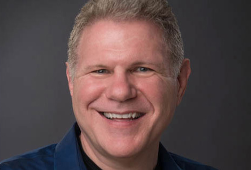
Tom Thomison
Co-Founder of HolacracyOne, the organization that developed the gold standard for self-organization. Now onto a new venture: self-organizing beyond Holacracy - introducing the For-Purpose-Enterprise.
encode.org
Grażyna Piotrowska-Oliwa
CEO & President of the Management Board, Virgin Mobile Polska
CEO, Virgin Mobile CEE. Graduate of INSEAD in Fontainebleau (EMBA), National School of Public Administration in Warsaw and Academy of Music in Katowice. Manager with over 20 years of experience, with majority of this time in telecommunications sector. Entrepreneur and investor.
CEO, Virgin Mobile CEE. Graduate of INSEAD in Fontainebleau (EMBA), National School of Public Administration in Warsaw and Academy of Music in Katowice. Manager with over 20 years of experience, with majority of this time in telecommunications sector. Entrepreneur and investor.
Virgin Mobile
John Scherer
Coach, Consultant, Author. Guides leaders in unleashing the human spirit at work. Inspires teams to self-organise based on their inner compass.
Scherer Leadership International
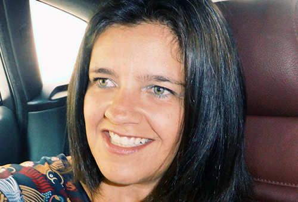
Ana Claudia Gonçalves
Board Member at the Institute for Strategic Clarity, former a fintech CEO. For her abundance is a choice and a leadership practice. And way more, than just an exercise in philosophy. It is a paradigm that helps companies grow and globally - governments innovate their economy. Co-hosting the Global Leadership LAB from Warsaw.
Institute for Strategic Clarity
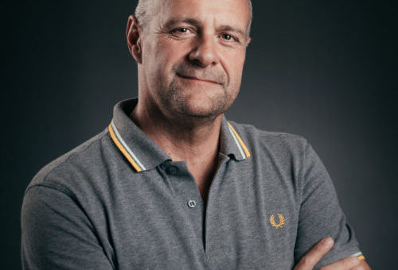
Erwin Van Waeleghem
TEAL4TEAL Founder. A Global Seedplanter at Tealspirator. Sharing testimonials of TEAL organisations. What was their journey? Their trigger to change? Their struggles? What does success look like? This all by a charming police commissioner.
Tealspirator
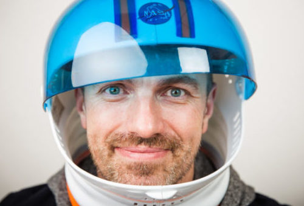
Edward Stanoch
Passionate about Exponential Organizations and building open and engaging cultures, works with Top Management Team of leading Polish and foreign companies in the area of leadership and strategy.
Edward Stanoch
Zuzanna Ziomecka
Media maker and mindfulness trainer. Focuses on how to blend media and mindfulness to equip practitioners of leadership with the skills necessary to craft a sustainable future.
POLSKI INSTYTUT MINDFULNESS
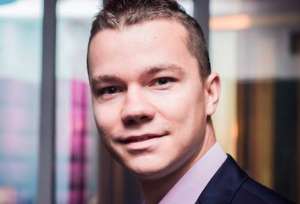
Michał Misztal
Supervisor to incubators on 8 universities with more than 600 startups. Currently Growth Director in BusinessLink, developing 3 accelerators located in Warsaw. Lecturer at Łazarski University.
BusinessLink
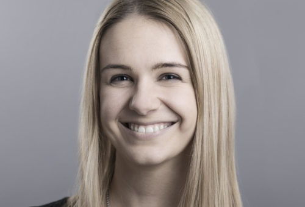
Kasia Ryniak
Life explorer fascinated by how people work and build organizations. One of 53 collaborators in u2i and creator of The Office Stories. Believes that purposeful micro-movements have the power to change the world.
u2i
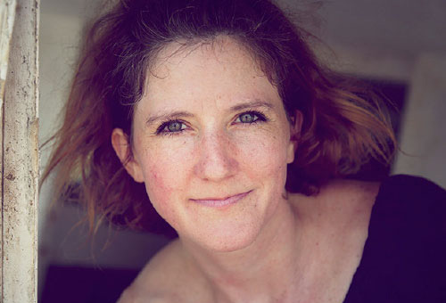
Julianne Becker
Coconat (Community and Collaboration in Nature) Co-Founder. Shares how a workation retreat can help your company get focused work done.
Coconat - A Workation Retreat
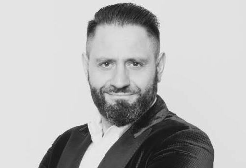
Grzegorz Zieba
Free Your Birds Founder, Entrepreneur, Trainer & Coach. Everyday business challenge hacker. Spiral dynamics & Graves Values Level passionate.
Free Your Birds
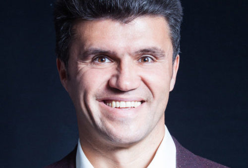
Peter Ivanov
Peter Ivanov is an international Manager and Virtual Teams Expert. His method “Virtual Power Teams” is proven in practice and has won multiple corporate awards among which are the "Best of the Best" in 2007 and the Global "IT Connect Award" in 2012.
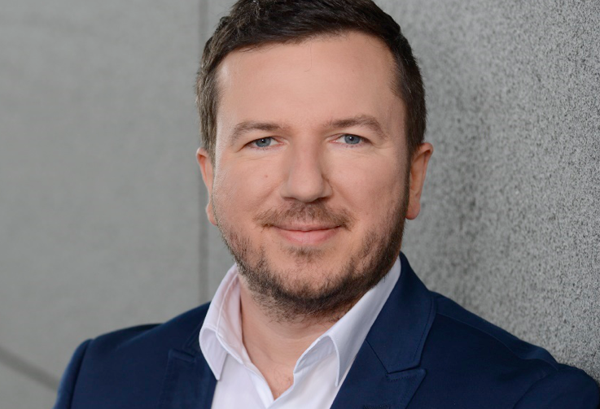
Krzysztof Herdzik
Founder of youcanbusiness.pl. Spent 29k hours leading winning multinational teams. Now support others in the way to true leadership. Experienced at senior leadership positions, awarded best manager in CEE.
youcanbusiness.pl
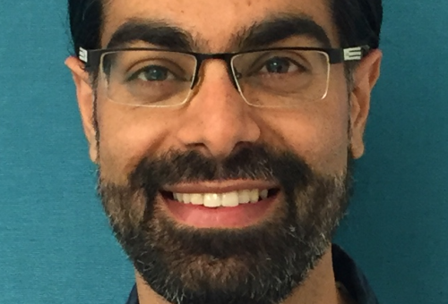
Baldip Singh
Supply Chain Manager in FMCG and Coordinator at Make Sense. Strongly believes that out of the new experimental ways of running social businesses new ways for leading organisations will emerge.
MakeSense
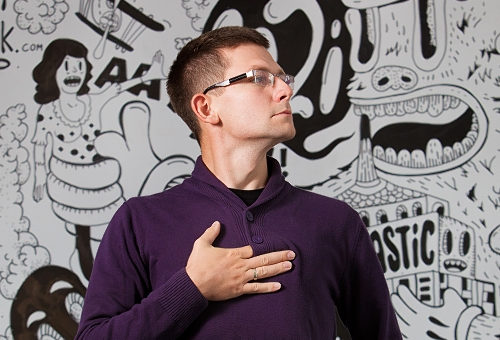
Paweł “Pablo” Kozłowski
Part-time leader and part time process janitor at u2i, he’s currently working furiously to make the company truly self-organized, making his job obsolete in the process.
u2i
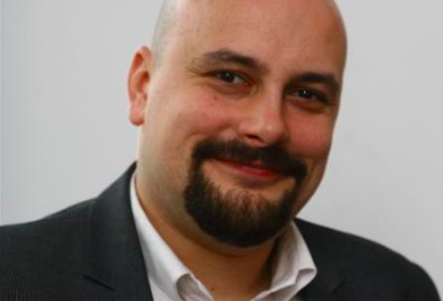
Teodor Sobczak
Social innovator, creator of educational games, business trainer. Tireless promotor of gamification and modern educational tools. A man who managed to remain a child, play games and make it his work.
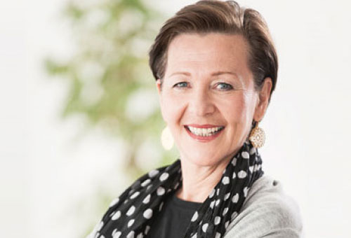
Christiane Seuhs-Schoeller
A seasoned Business Consultant and European Holacracy Pioneer, today Christiane is founding member of encode.org, deeply engaging for what is needed to become a For-Purpose Enterprise and a Purpose Agent.
encode.org
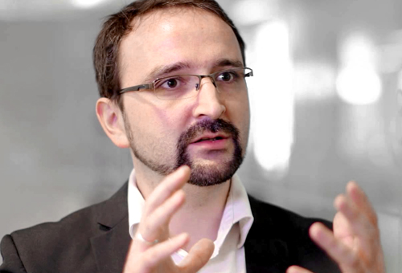
Christopher Hinske
Social Impact Co-Investor at Vibrancy Story. Focused on creating bridges between academia, politics and business for thriving organisations. Joining us online, co-hosting the Global Leadership LAB.
Vibrancy Institute

Rafał Dziwiński
Husband, Father. IT Consultant at u2i. Trying to make sense of things.
u2i
Gabi Krupa
Energized.org Partner. Back in her motherland after several years co-creating projects abroad. One of two Holacracy coaches in Poland.
energized.org
Katarzyna Kaminska
Her mission is to facilitate human development - both professional & personal. Big believer in social change through business. That's why she co-leads two organisations supporting social entrepreneurs - Kairos & MakeSense.
MakeSense
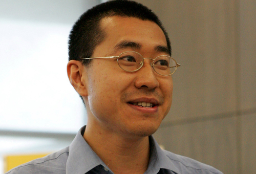
Chong Hiu Pun
Lecturer and trainer in corporate world. Believes in 3Ps: Purpose-Passion-Persistence. Turn to him for hacks on how psychometrics can help you boost your leadership style.
Berlin School of Economics and Law / Deutsche Bank
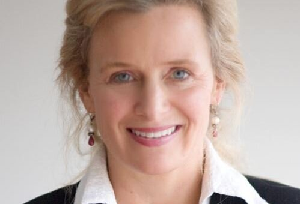
Lynnea Brinkerhoff
Organizational Advisor, Educator, Executive & Transition Coach. Knows how Agile Leadership can help deal with the unpredictability of the real world workplace.
Scherer Leadership International
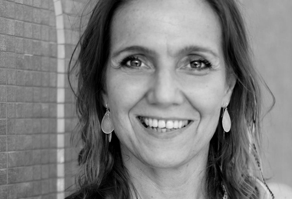
Anna Sierpowska
Business project developer. Creative director of Sante - a City Health Resort in Warsaw. Involved in Movement Medicine and Freedance work.
School of Movement Medicine
Marta Karwacka
Fair Fashionista. Believes that Smart Consumers are out to change the world. Explores the world of Fair Fashion Producers in Poland. Because bottom-up change is happening. And we ask - so, how does the new leadership dress?
How To Wear Fair?
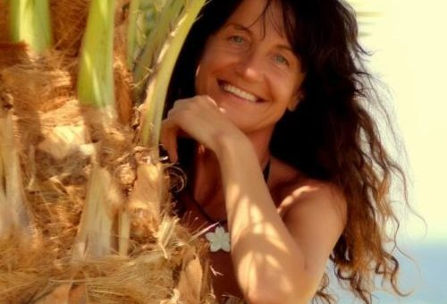
Tatiana Cichocka
Originally a corporate child. Left corporations for a spiritual journey. Returning to bring rituals to the business world. Helps organisations connect to their deeper purpose.
Akademia Przebudzonej Kobiecości
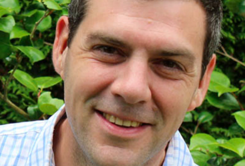
Phillippe Pinault
HolaSpirit Founder. Will offer you the opportunity to test how your company would operate inside Holacracy, using a Holacracy app. WARNING This one needs your attention: Also here to test-ride a beta version of their new TEAL app.
HolaSpirit
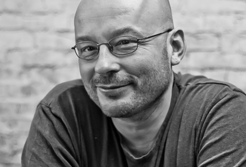
Przemek Gawroński
Aikido teacher and studio owner. And a coach. Sees Aikido as a great leadership metaphor. You can learn from him how to fall without hurting yourself both phisically and beyond.
Aikido Tanren Dojo
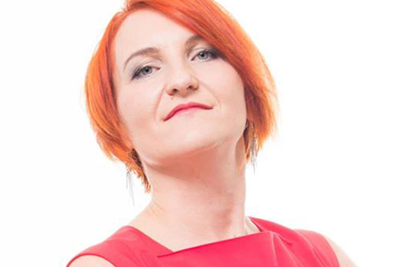
Julia Łaszkiewicz
Board member in a real-estate company with unexpected responsibilities description, that we call Corporate Wellness Hardcore! Blending leadership in business and life.
Ekolan
Majka Lipiak
Leżę i Pracuję Founder. This marketing agency is Poland's first to give jobs exclusively to people with paralysis.
Leżę i Pracuję

Angelika Chrapkiewicz-Gądek
A motivational speaker & scuba-diver, living with spinal muscular atrophy. Will not take NO for an answer. If you have days when you think "I am not good enough for it" learn from her, how to push the limits of the possible.
Angisteps
Magdalena Petryniak
Entrepreneur: founder of Grupa SAPR and Story Seekers Polska, social activist, also working for non-profits, trainer and consultant in communication, sales and marketing. She believes that people make the change happen and everything she does is to empower them, so they can make the transformation in a professional way.
Story Seekers
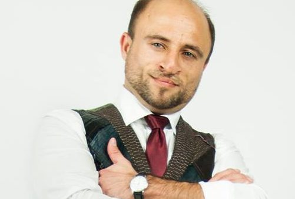
Łukasz Makuch
Sustainability evangelist, deeply believes in social innovation and system thinking. CSR practitioner supporting companies in sustainable change and circular economy implementation. Passionate about crowdsourcing and crowdfunding
Sustainers
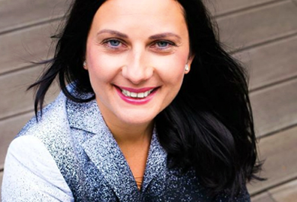
Sylwia Lewandowska-Akhvlediani
Progressive Partners Founder, Leadership Festival Co-Founder. Business psychologist, passionate about leadership in organisations and about true quality in life. Working internationally for the last 15 years. Current focus: Experience Transfer - Leadership and Parentship.
Progressive Partners
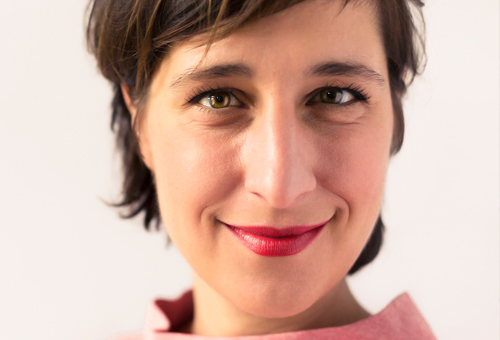
Karolina Iwa
Leadership Festival Co-Founder. Senior Facilitator. Social Innovation geek. Committed to creating a better world at work and world at large. Passionate about deep knowing, organisational creativity and self-organisation.
Progressive Partners